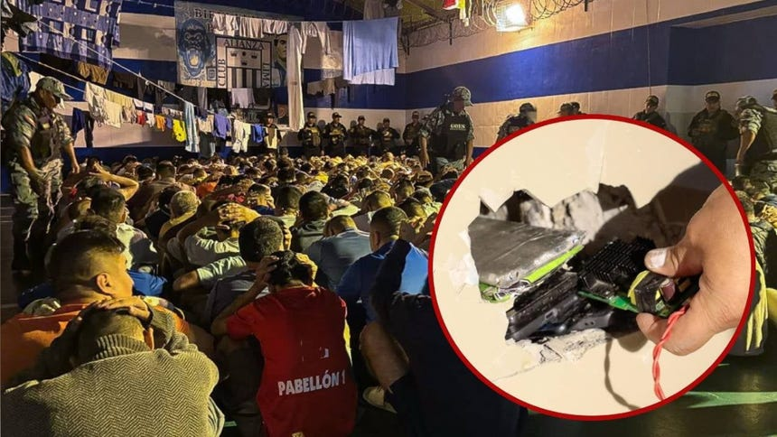

PNP incauta droga, armas y celulares en requisa simultánea en cinco penales del Perú

La Policía Nacional del Perú (PNP) ejecutó en la madrugada de este jueves una requisa simultánea en cinco establecimientos penitenciarios del país, en el marco del estado de emergencia decretado por el Gobierno en estos recintos. La operación, que contó con el respaldo de las Fuerzas Armadas y el Instituto Nacional Penitenciario (INPE), buscó detectar y retirar celulares, equipos electrónicos, armas y otros elementos prohibidos que puedan ser utilizados para coordinar extorsiones, amenazas u otros delitos desde el interior de las cárceles.
Los penales intervenidos fueron Miguel Castro Castro, en San Juan de Lurigancho; Ancón I; El Milagro, en Trujillo; Cochamarca, en Pasco; y Challapalca, en Tacna. En total, más de 500 personas, entre agentes penitenciarios, policías y fiscales, participaron en las revisiones de pabellones, celdas, ambientes y áreas comunes durante la noche y hasta la madrugada. El jefe de la PNP, Fredy López Mendoza, dirigió personalmente el operativo en el Castro Castro, donde se desplegaron 160 efectivos policiales y dos canes especializados.
Resultados del operativo por recinto penitenciario

En el penal Miguel Castro Castro, bajo la supervisión del presidente del INPE, Abraham Lescano, el contingente intervino los pabellones 1 y 5. Allí se hallaron 19 celulares, 7 routers, 10 cargadores para celular, 6 audífonos, 5 memorias micro SD, 2 memorias USB, 1 chip y otros dispositivos y accesorios electrónicos. En el establecimiento penitenciario Ancón I, la intervención se realizó en los pabellones 1 y 8, donde se encontraron 38 envoltorios con droga —presuntamente pasta básica de cocaína—, anotaciones con números telefónicos, 8 cocinas artesanales, 8 relojes sin marca y electrodomésticos prohibidos.
En el penal de Cochamarca se intervinieron el segundo y tercer piso del pabellón A-1, etapa A, donde se hallaron 24 envoltorios de papel con marihuana. En el establecimiento penitenciario Challapalca, se revisaron los pabellones 1 y 2, encontrándose 3 cúteres, 2 espejos y 5 afeitadores, entre otros objetos prohibidos. Mientras tanto, en el penal El Milagro, en Trujillo, la intervención concluyó sin hallazgo de celulares ni drogas.
Un golpe a las comunicaciones ilícitas desde prisión

La operación forma parte de las acciones destinadas a prevenir y neutralizar el accionar de la delincuencia común y la criminalidad organizada desde los penales, considerados espacios que deben mantenerse bajo control de las autoridades penitenciarias y de seguridad. El megaoperativo constituye la primera gran acción liderada por el nuevo comandante general de la PNP, Fredy López Mendoza, quien asumió el cargo recientemente.
Las Fuerzas Armadas asumieron el control del perímetro externo de los establecimientos penitenciarios para garantizar las condiciones de seguridad durante el desarrollo de las operaciones. Todo lo incautado fue puesto a disposición de la Policía Nacional del Perú y del Ministerio Público, para las investigaciones correspondientes conforme a ley.
El Ministerio de Justicia y Derechos Humanos (MINJUSDH) informó que continuará impulsando operativos de control en los establecimientos penitenciarios con el objetivo de reforzar la seguridad y fortalecer el principio de autoridad dentro de los penales. Estas acciones forman parte de la estrategia impulsada por el Ministerio del Interior para fortalecer el control penitenciario, neutralizar las comunicaciones ilegales y evitar que los centros de reclusión sean utilizados como plataformas para la planificación de delitos.
Contexto: estado de emergencia en los penales
El Gobierno decretó el estado de emergencia en estos cinco establecimientos penitenciarios como respuesta a la creciente preocupación por el control de las organizaciones criminales desde el interior de las cárceles. La medida busca dotar a las autoridades de herramientas excepcionales para intervenir de manera más efectiva en los recintos considerados estratégicos dentro de las acciones de control y seguridad penitenciaria.
La requisa simultánea se suma a una serie de operativos realizados en los últimos meses. Según datos del INPE, entre julio y noviembre de 2025 se ejecutaron 2,861 requisas a nivel nacional, en las que se incautaron 736 celulares, 1,112 accesorios de celular, más de 500 litros de alcohol fermentado, más de 428 armas punzocortantes y 2,699 gramos de droga. Estas cifras evidencian la magnitud del problema de la introducción de objetos prohibidos en los penales peruanos y la persistencia de redes de comunicación ilícita desde el interior de los recintos.
Las autoridades han señalado que los operativos continuarán de manera periódica y sorpresiva en todos los establecimientos penitenciarios del país, con el objetivo de desarticular las estructuras criminales que operan desde prisión y garantizar condiciones de seguridad tanto para el personal penitenciario como para la población recluida. La lucha contra la criminalidad organizada desde los penales se ha convertido en una prioridad para el actual Gobierno, que ha desplegado un esfuerzo conjunto entre la PNP, el INPE, el Ministerio Público y las Fuerzas Armadas.